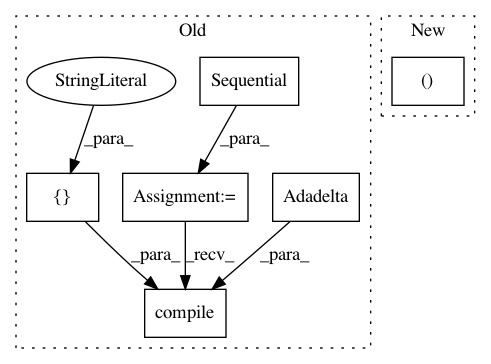

0a80b9769115d291f15c244429793eda4cb8ecad,tests/test_layer_transformer.py,,test_conv_to_wider_layer,#,60
Before Change
optimizer=Adadelta(),
metrics=["accuracy"])
a2, b2 = conv_to_wider_layer(a, b, 5)
model2 = Sequential([a2, b2])
model2.compile(loss=categorical_crossentropy,
optimizer=Adadelta(),
metrics=["accuracy"])
random_input = np.random.rand(1, 28, 28, 1)
output1 = model.predict_on_batch(random_input)
output2 = model2.predict_on_batch(random_input)
assert np.sum(output1.flatten() - output2.flatten()) < 1e-4
After Change
conv1 = model.layers[1]
conv2 = model.layers[4]
bn1 = model.layers[2]
new_conv1, [new_conv2], [new_bn1] = conv_to_wider_layer(conv1, [conv2], [bn1], 3)
new_input = Input(shape=get_int_tuple(model.inputs[0].shape[1:]))
temp_tensor = new_conv1(new_input)
In pattern: SUPERPATTERN
Frequency: 3
Non-data size: 6
Instances
Project Name: keras-team/autokeras
Commit Name: 0a80b9769115d291f15c244429793eda4cb8ecad
Time: 2017-12-28
Author: jhfjhfj1@gmail.com
File Name: tests/test_layer_transformer.py
Class Name:
Method Name: test_conv_to_wider_layer
Project Name: IBM/adversarial-robustness-toolbox
Commit Name: 34c9172185fc79e6a971919f910fbbb7e945f5e5
Time: 2019-03-08
Author: Maria-Irina.Nicolae@ibm.com
File Name: art/classifiers/keras_unittest.py
Class Name: TestKerasClassifier
Method Name: setUpClass